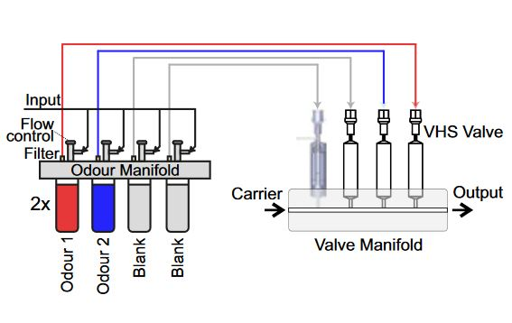
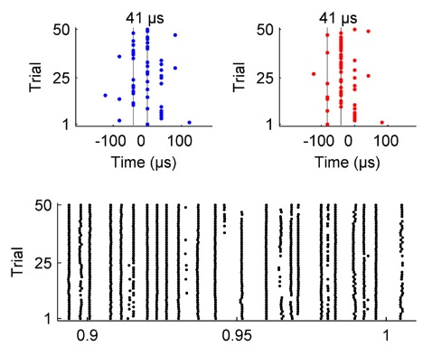

PUBLICATIONS

Mammalian olfaction is a high temporal bandwidth sense
Erskine, A., Ackels, T., Dasgupta, D., Fukunaga, I., Schaefer, A. T. (bioRxiv 2019)
Paper Description

AutonoMouse: High throughput operant conditioning reveals progressive impairment with graded olfactory bulb lesions
Erskine, A., Bus, T., Herb, J. T., Schaefer, A. T. (PLOS ONE 2019)
Paper Description

Prediction of primary somatosensory neuron activity during active tactile exploration
Campagner, D., Evans, H. M., Bale, M. R., Erskine, A., Petersen, R. S. (eLife 2016)
Paper Description

Microsecond-scale timing precision in rodent trigeminal primary afferents
Bale, M. R., Campagner, D. Erskine, A., Petersen, R. S. (JNeurosci 2015)
Paper Description